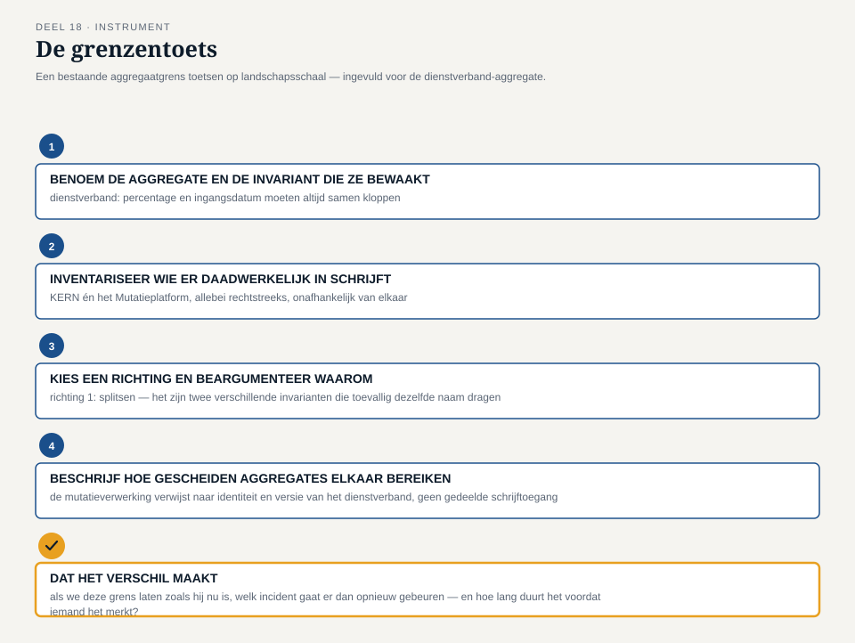

Deel 18 — Aggregates herzien: consistentiegrenzen bij meerdere teams
Reader · Ductus-cursus Domain-Driven Design · niveau 2 (professional) · deel 18 van 30
18.1 Waar dit deel over gaat
In niveau 1 trok het Nabestaandenloket-team één aggregaatgrens: het dossier, met het dossiernummer als identiteit, als enige toegangspoort tot alles wat gegarandeerd tegelijk moest kloppen (deel 6). Dat werkte, en het werkte goed, om een reden die op dat moment vanzelfsprekend leek en het nu niet meer is: er was precies één team dat aan die grens bouwde. Als Willemijn en een collega tegelijk aan hetzelfde dossier werkten, was dat een kwestie van werkverdeling binnen één team, met één gedeeld begrip van wat het dossier was en één weg om het te wijzigen.
Op landschapsschaal gaat die vanzelfsprekendheid niet meer op. Het contextmap-team ontdekt in dit deel dat de botsing waarmee niveau 2 opende — twee deelprojecten die allebei verdedigbaar bezig waren, maar tegenstrijdige aannames deden over wat een dienstverband is (casusdossier §3) — geen samenwerkingsprobleem is dat met betere afstemming op te lossen valt. Het is een symptoom van een aggregaatgrens die, zonder dat iemand het besloot, door twee teams tegelijk wordt aangeraakt. Vera’s observatie aan het eind van deel 17 — dat de voorlopige aggregaatgrens uit deel 16 misschien niet alles dekt wat één concreet voorbeeld vraagt — wijst in dezelfde richting: sommige grenzen die binnen één team goed aanvoelden, houden geen stand zodra er een tweede belanghebbende partij bij komt.
Dit deel herziet de aggregaatgrenzen van het Mutatieplatform-landschap met precies die vraag als instrument: niet “wat hoort bij elkaar”, zoals in deel 6, maar “wie is eigenaar van deze grens, en houdt die eigendom stand als er een tweede team meebouwt”. De kernstelling van dit deel: een aggregate die structureel door twee teams tegelijk wordt gewijzigd, is geen toevalstreffer van een druk landschap — het is een ontwerpfout, en de oplossing ligt zelden in betere afstemming tussen de twee teams, maar bijna altijd in het herzien van de grens zelf.
Aan het eind van dit deel kun je:
- uitleggen waarom een aggregaatgrens die op één-team-schaal goed werkt, op landschapsschaal kan blijven bestaan of juist moet worden herzien, en het verschil daartussen benoemen;
- herkennen wanneer een cross-team-conflict over een aggregate wijst op een modelleerfout in plaats van op een coördinatieprobleem;
- twee herzieningsrichtingen toepassen — de aggregate splitsen langs teamgrenzen, of de grens tussen de betrokken bounded contexts zelf heroverwegen — en beargumenteren welke van de twee in een gegeven geval passend is;
- met de grenzentoets een bestaande aggregaatgrens op landschapsschaal toetsen en, waar nodig, herzien.
18.2 De casus: één begrip, twee eigenaren
Uit het casusdossier: de botsing uit §3 tussen de twee deelprojecten over de definitie van een dienstverband, nu opnieuw op tafel — niet als incident dat is afgehandeld, maar als vraagstuk dat opnieuw opduikt zodra het team de aggregaatgrenzen van het Mutatieplatform bekijkt.
Vera opent de sessie met de relatie die in deel 13 al als shared kernel werd benoemd: KERN en het Mutatieplatform delen, tot op zekere hoogte, hun begrip van wat een deelnemer en een dienstverband zijn. “Ik heb toen gezegd dat een shared kernel geen technische koppeling is, maar een doorlopende, kostbare afspraak. Wat ik er niet bij zei: op dit moment is het geen afspraak. Het is één aggregate — het dienstverband, met zijn percentage, zijn ingangsdatum, zijn status — waar mijn team én het Mutatieplatform-team allebei rechtstreeks in schrijven. Niet via elkaar. Gewoon allebei, wanneer het hun eigen deelproject uitkomt.”
Karsten herkent onmiddellijk waar dat toe leidt. “Dat is precies de botsing van twee maanden geleden. Wij namen aan dat een deeltijdwijziging een nieuw dienstverband is, met een eigen ingangsdatum. KERN beschouwt hetzelfde dienstverband als ononderbroken doorlopend. Dat zijn geen twee meningen over hetzelfde ding — het zijn twee teams die allebei, onafhankelijk van elkaar, de invariant van hetzelfde aggregate bepalen. En een aggregate kan er maar één hebben.”
Otto, zoals gewoonlijk op zoek naar de snelste uitweg: “Dus we spreken gewoon af wie voortaan als eerste schrijft, en de ander volgt daarna?” Foppe onderbreekt hem voordat iemand anders het kan beamen. “Dat lost de botsing van twee maanden geleden misschien voor deze ene keer op. Maar het antwoord dat jullie nu geven, is een procesafspraak bovenop een grens die zelf het probleem is. Stel dat we een derde team krijgen dat ook iets met een dienstverband moet doen — moet dat team dan ook in de rij aansluiten om te weten wie er nu weer als eerste mag schrijven?”
Priya, die als productlead van Wegwijzer tot dusver alleen leest en niet schrijft, brengt de vraag terug naar waar deel 6 begon. “In niveau 1 was de vraag: welke wijzigingen moeten gegarandeerd samen kloppen? Die vraag hadden we hier ook kunnen stellen. Maar er zit een vraag vóór die vraag die we toen niet nodig hadden, omdat er maar één team was: als twee wijzigingen gegarandeerd samen moeten kloppen, wie is dan verantwoordelijk om dat te bewaken? Bij het Nabestaandenloket was het antwoord vanzelfsprekend — het ene team. Hier is het antwoord niet vanzelfsprekend, en dat is precies wat er misging.”
Daan vat samen wat het team in de eerste twintig minuten van de sessie heeft blootgelegd: “We hebben in deel 6 geleerd dat een aggregate een consistentiegrens is die één ding garandeert: dat wat erbinnen zit altijd samen klopt. Wat we vandaag ontdekken, is dat die garantie een eigenaar nodig heeft die haar kan waarmaken — en dat een aggregate zonder één duidelijke eigenaar, hoe zorgvuldig zijn interne consistentieregels ook zijn opgeschreven, in de praktijk geen garantie meer is.”

18.3 Waarom dit een ontwerpfout is, geen toevalstreffer
Het is verleidelijk om de botsing uit §18.2 te lezen als pech: twee teams die toevallig tegelijk aan hetzelfde stuk landschap werkten, in een programma dat onder tijdsdruk staat. Dat lezen mist waar het probleem werkelijk zit. Een aggregate bewaakt, per definitie, een invariant — een regel die altijd moet kloppen, ongeacht wie de wijziging aanbrengt of wanneer. Die garantie werkt alleen als er precies één plek is die alle wijzigingen ziet vóórdat ze worden doorgevoerd, zodat die plek een ongeldige wijziging kan weigeren. Zodra twee teams onafhankelijk van elkaar rechtstreeks in dezelfde aggregate schrijven, bestaat die ene plek niet meer — niet omdat de code het niet aankan, maar omdat er twee onafhankelijke besluitvormers zijn die allebei denken dat zíj de invariant bewaken, zonder dat een van beide het hele beeld heeft.
Dat is een ander soort probleem dan de twee denkfouten uit deel 6 (een aggregate te groot of te klein trekken binnen één team). Bij een te grote of te kleine aggregate is de grens zelf verkeerd getekend, maar er is nog altijd één partij die de grens — hoe onhandig ook — kan bewaken. Bij een aggregate die door twee teams wordt aangeraakt, is de bewaking zelf onmogelijk geworden, ongeacht waar de grens precies loopt. Vandaar de vuistregel die dit deel toevoegt aan wat deel 6 al vaststelde: een aggregate hoort bij precies één team. Niet omdat teams elkaar niet vertrouwen, maar omdat een consistentiegarantie een enkele, ondubbelzinnige bewaker vereist, en een team — met zijn eigen planning, releaseritme en beslissingsbevoegdheid — de kleinste eenheid is die die rol in de praktijk kan vervullen.
Karsten formuleert de consequentie het scherpst: “Als twee teams allebei aan dezelfde aggregate moeten kunnen schrijven, is dat niet een reden om beter af te stemmen. Het is een teken dat we, ergens eerder, een grens hadden moeten trekken die we niet trokken — of dat we een grens die we wél trokken, verkeerd hebben gelegd.” Dat is precies waarom dit deel “aggregates herzien” heet, en niet “aggregates coördineren”: de opgave is niet om het schrijfconflict te managen, maar om de grens zelf opnieuw te trekken, zodat het conflict niet meer kan ontstaan.
Een aggregate die door twee teams wordt aangeraakt is, met andere woorden, zelden een zeldzaam ongeluk. Zodra een landschap uit meerdere, onafhankelijk werkende teams bestaat — en dat is precies wat het Programma Mutatieplatform is, sinds de context map van deel 11 tot en met 14 het landschap in aparte bounded contexts verdeelde — is het voorspelbaar dat een begrip dat op het snijvlak van twee contexts ligt, zoals “dienstverband”, de verleiding oproept om als één, gedeelde aggregate te behandelen. Dat is precies de verleiding die dit deel weerstaat.

18.4 Twee herzieningsrichtingen
Zodra het team een aggregate herkent die door meerdere teams wordt aangeraakt, ligt er niet één vaste oplossing klaar, maar een keuze tussen twee richtingen — en de keuze hangt af van een vraag die niet over techniek gaat, maar over het domein zelf: horen de twee teams eigenlijk hetzelfde ding te bewaken, of bewaken ze, bij nader inzien, twee verschillende dingen die toevallig dezelfde naam dragen?
Richting 1 — splitsen langs teamgrenzen. Vaak blijkt, bij nadere inspectie, dat wat één aggregate leek, eigenlijk twee afzonderlijke invarianten bewaakt die toevallig over hetzelfde begrip gaan, maar niet over dezelfde wijzigingen. KERN moet garanderen dat een dienstverband, als authentieke registratie, altijd een geldige ingangsdatum en een geldig percentage heeft — dat is een invariant die alleen KERN kan en moet bewaken, omdat KERN de bron is. Het Mutatieplatform moet garanderen dat een binnenkomende mutatie, vóór verwerking, aan de eigen validatieregels voldoet — een andere invariant, die niets verliest als ze wordt bewaakt op basis van een momentopname van het dienstverband in plaats van op het dienstverband zelf. In dat geval wordt het dienstverband bij KERN de ene, complete aggregate; het Mutatieplatform krijgt een eigen, kleinere aggregate (“mutatieverwerking”) die verwijst naar het dienstverband via een identiteit en een versie, zonder ooit rechtstreeks in de aggregate van KERN te schrijven. Wat vroeger één, gedeeld ding leek, wordt twee dingen die via een verwijzing met elkaar samenhangen — precies zoals deel 6 al liet zien dat correspondentie naar een vaststelling kan verwijzen zonder er onderdeel van te zijn.
Richting 2 — de contextgrens zelf heroverwegen. Soms wijst het conflict niet op een aggregate die ten onrechte gedeeld is, maar op een bounded-contextgrens (deel 9, deel 13-14) die de verkeerde relatie draagt. Als KERN en het Mutatieplatform structureel, langdurig, op elk detail van “dienstverband” moeten overeenstemmen — niet omdat het toevallig zo uitpakt, maar omdat het wezenlijk bij hun gedeelde taak hoort — dan is een bewust gekozen, zwaar bewaakte shared kernel (deel 13) misschien wél de juiste relatie, mits ze als zodanig wordt bestuurd: één gezamenlijk team, of één vaste, expliciete afstemmingsroute, in plaats van twee teams die onafhankelijk van elkaar dezelfde tabel muteren. Vera formuleert het verschil: “Een shared kernel is geen verbod op delen. Het is een verbod op ongeorganiseerd delen. Zodra we kiezen voor een shared kernel, kiezen we ook voor de kosten die daarbij horen — en op dit moment betalen we die kosten al, zonder dat we ooit bewust hebben gekozen ervoor te betalen.”
Beide richtingen lossen hetzelfde probleem op, maar drukken een andere waarheid over het domein uit. Richting 1 zegt: dit was nooit werkelijk één ding. Richting 2 zegt: dit is werkelijk één ding, en dat vraagt een bestuursvorm die recht doet aan wat het kost. Het team dat een cross-team-aggregate tegenkomt, moet eerst deze vraag beantwoorden voordat het een oplossing kiest — en de grenzentoets in §18.6 structureert precies dat gesprek.

18.5 Terug naar de deeltijdwijziging: Vera’s observatie opgelost
Foppe brengt het team terug bij de tweede aanleiding voor dit deel: Vera’s observatie aan het eind van deel 17, over de tijdelijke wijziging met een vaste einddatum. Om de terugkeer naar het oorspronkelijke percentage te kunnen controleren, moet het systeem op het moment van die terugkeer weten wat het oorspronkelijke percentage was — een gegeven dat, in het voorlopige model van deel 16, binnen dezelfde aggregaatgrens leefde als het huidige percentage. Maar de controle zelf — is de terugkeer op tijd gebeurd — leek Vera ergens anders te horen: bij een bewaking die niet gebonden is aan één dienstverband, maar aan een deadline.
Toegepast op §18.4: dit is geen conflict tussen twee teams, maar wel dezelfde onderliggende vraag — welke invariant hoort waar, en wie moet haar bewaken. Het team herkent, na de aggregate-oefening met KERN, hetzelfde patroon in het klein. Het percentage van het dienstverband en de vraag of het percentage geldig is op enig moment, horen bij de dienstverband-aggregate zelf — precies zoals deel 6 dat al vaststelde voor bedrag en onderbouwing. Maar “is deze tijdelijke wijziging op de afgesproken datum teruggedraaid” is geen invariant van het dienstverband op een willekeurig moment — het is een invariant over tijd, die vraagt om iets te bewaken dat op een later moment moet gebeuren, onafhankelijk van of er tussentijds nog andere wijzigingen aan hetzelfde dienstverband plaatsvinden.
Dat maakt de termijnbewaking een eigen, kleine aggregate: één die een deadline en een verwachte terugkeerwaarde vasthoudt, niet het dienstverband zelf herschrijft, en op het juiste moment een signaal afgeeft dat de dienstverband-aggregate — via zijn eigen, lokale invariant — kan opvolgen. De twee aggregates delen geen schrijftoegang tot elkaars interne staat; ze communiceren via een signaal dat op het juiste moment ontstaat. Otto merkt op, voor het eerst instemmend met een uitkomst die niet het snelste antwoord was: “Dat is dan geen coördinatieprobleem meer. Dat is gewoon: twee dingen die allebei hun eigen klein baasje hebben, en die elkaar op het juiste moment een seintje geven.” Foppe: “Precies dat seintje — hoe het eruitziet en hoe het de aggregates met elkaar verbindt zonder dat de een in de ander hoeft te schrijven — is het onderwerp van deel 21, wanneer we domain events als integratiemiddel behandelen. Voor nu is het genoeg dat jullie de grens hebben herkend.”

18.6 ↗ Uitvoering: het Locked Platform
Dit invariant-denken — één aggregate, één bewaker, wijzigingen die elkaar via een signaal bereiken in plaats van via gedeelde schrijftoegang — is een modelleerkeuze, geen technologiekeuze. Ze laat zich op meer dan één manier bouwen. Een klassieke implementatie met een ORM bewaakt dezelfde grens door alle wijzigingen aan een aggregate binnen één transactie op één rijenset te laten verlopen: de databaseregels zelf zorgen ervoor dat er geen tussentijdse, halve staat zichtbaar wordt. Een event-sourced implementatie bewaakt dezelfde grens anders: elke aggregate-instantie krijgt een eigen, opeenvolgende reeks gebeurtenissen, en een wijziging wordt pas aanvaard als ze consistent is met alles wat er in die reeks al is vastgelegd — de grens ligt dan op de reeks, niet op een rij in een tabel.
Pieters eigen Locked Platform is één noemenswaardig voorbeeld van die tweede route: een data-centrisch, event-driven platform waarin aggregates worden uitgedrukt als toestandsmachines met een eigen event-reeks, en waarin CQRS het lezen en het schrijven van diezelfde grens uit elkaar trekt. Dat is één mogelijke uitvoering naast andere — dit deel gaat niet dieper op de techniek in. Voor wie de concrete werking wil zien: ↗ Toolbijlage.
18.7 De werkvorm: de grenzentoets
Het instrument van dit deel is de grenzentoets: een sjabloon om een bestaande of voorgestelde aggregaatgrens te toetsen op landschapsschaal — niet op de vraag van deel 6 (“wat moet samen kloppen”), maar op de vraag die daaraan voorafgaat: wie kan die garantie in de praktijk waarmaken.
De vier stappen
Stap 1 — Benoem de aggregate en de invariant die ze bewaakt. Eén zin: wat moet, binnen deze grens, altijd samen kloppen? Gebruik zo nodig het resultaat van een eerdere aggregaatschets (deel 6) als startpunt.
Stap 2 — Inventariseer wie er daadwerkelijk in schrijft. Ga na welke teams, welke systemen en welke deelprocessen op dit moment — of in het voorgestelde ontwerp — rechtstreeks wijzigingen aan deze aggregate aanbrengen. Eén team of systeem: ga door naar stap 4. Twee of meer: ga naar stap 3.
Stap 3 — Kies een richting en beargumenteer waarom. Is dit, bij nader inzien, één invariant die twee teams toevallig allebei nodig hebben (richting 1: splitsen langs teamgrenzen, met een verwijzing in plaats van gedeelde schrijftoegang), of is dit werkelijk één gedeelde invariant die een bestuurde shared kernel vraagt (richting 2: bewust kiezen, met een team of een vaste afstemmingsroute die ervoor bewaakt)? Onderbouw met het criterium uit §18.4: zou dit, structureel en langdurig, hetzelfde blijven ongeacht wie er op enig moment aan werkt, of blijkt het bij uitsplitsen twee verschillende dingen te zijn die toevallig dezelfde naam droegen?
Stap 4 — Beschrijf hoe gescheiden aggregates elkaar bereiken. Als stap 3 tot splitsen leidt, benoem dan expliciet hoe de nieuwe, gescheiden aggregates met elkaar samenhangen: via een verwijzing naar identiteit en versie (zoals de mutatieverwerking die verwijst naar het dienstverband), via een signaal op het juiste moment (zoals de termijnbewaking uit §18.5), of via een andere vorm die in een later deel (deel 19, deel 21) verder wordt uitgewerkt. Het is voldoende om hier te benoemen dát er een verbinding nodig is en van welke aard — de precieze technische vorm hoort bij die latere delen.
Het veld dat het verschil maakt
Onder de vier stappen staat het afsluitende veld:
Dat het verschil maakt: als we deze grens laten zoals hij nu is — met twee teams die er allebei in schrijven — welk incident gaat er dan opnieuw gebeuren, en hoe lang duurt het voordat iemand het merkt?
Dit veld dwingt het team om een herziening niet als abstracte hygiëne te presenteren, maar als iets dat een concreet, herkenbaar incident voorkomt. Karsten past het toe op de dienstverband-aggregate: “Als we deze grens laten zoals hij is, gebeurt de botsing van twee maanden geleden opnieuw, zodra een derde deelproject met dezelfde aanname aan de slag gaat — en dat duurt tot het moment dat twee systemen data met elkaar moeten uitwisselen, wat vaak pas na weken bouwwerk gebeurt, precies zoals de vorige keer.” Vera past het toe op de termijnbewaking: “Als we dat laten zoals het was, merkt niemand het totdat een deelnemer een brief krijgt met een percentage dat al maanden niet meer klopt — en dat is precies het soort fout dat pas opvalt als een nabestaande, of in dit geval een actieve deelnemer, er zelf over belt.”

18.8 Terug naar de casus, en vooruit
Aan het eind van de sessie liggen er twee ingevulde grenzentoetsen op tafel. De dienstverband-aggregate wordt gesplitst: KERN behoudt de volledige, authentieke aggregate; het Mutatieplatform krijgt een eigen, kleinere aggregate die verwijst naar identiteit en versie in plaats van rechtstreeks te schrijven. De termijnbewaking uit deel 17 wordt een eigen, kleine aggregate naast de dienstverband-aggregate, verbonden via een signaal op de afgesproken datum. Beide uitkomsten volgen hetzelfde patroon: niet een grens die groter of kleiner wordt getrokken binnen één team, zoals in deel 6, maar een grens die wordt losgemaakt van een situatie waarin twee partijen onafhankelijk van elkaar dachten dezelfde garantie te bewaken.
Daan vat de sessie samen in het verslag aan Iris: “We hebben de botsing van twee maanden geleden niet opgelost door beter af te spreken wie eerst mag schrijven. We hebben ontdekt dat er nooit één grens had mogen bestaan die twee teams tegelijk bewaakten — en nu we die grens hebben losgemaakt, is er geen afspraak meer nodig, omdat er geen conflict meer kán ontstaan.” Iris, die de eerste versie van het verslag leest, stelt één vraag terug: “En hoe voorkomen we dat dit over een half jaar, bij de volgende uitbreiding van het programma, gewoon weer gebeurt — met een ander begrip, een andere aggregate?” Daan heeft daar op dat moment nog geen volledig antwoord op — dat antwoord ligt, zo blijkt in deel 20, deels in hoe het programma zelf is ingericht.
Vooruit naar deel 19. De dienstverband-aggregate en de mutatieverwerking-aggregate zijn nu gescheiden, maar ze moeten nog altijd met elkaar samenwerken binnen één systeem — en de manier waarop een systeem dat doet, is zelf een ontwerpkeuze. Deel 19, een sessie van twee dagdelen, behandelt de applicatie-architectuurpatronen — hexagonaal, gelaagd, CQRS als patroon — die bepalen hoe gescheiden aggregates, gescheiden lezen en schrijven, en gescheiden teams zich binnen één technische architectuur tot elkaar verhouden. Het team past, per relatie uit de context map van deel 13-14, een patroon toe op de vraag welke architectuur de gekozen relatie het beste ondersteunt.